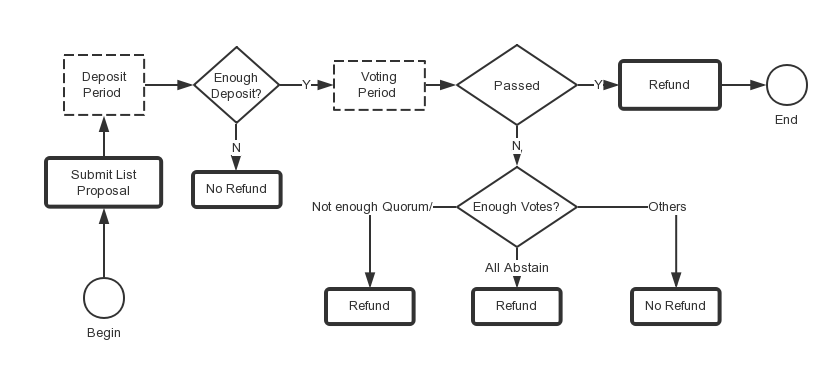

Governance
Primer on Governance
ScolCoin Chain has its own built-in governance module that lets SCOL holders submit proposals for adding trade pairs. In order for the proposal to be open for voting, it needs to come with a deposit that is greater than a parameter called Deposit. The deposit need not be provided in its entirety by the submitter. If the initial proposer's deposit is not sufficient, the proposal enters the deposit_period status. Then, any SCOL holder can increase the deposit by sending a depositTx.
A purely-code-controlled escrow account will be used to hold deposits during voting period. It is a kind of account which is derived from a hard-coded string in shree chain protocol. This kind of account doesn't have its own private key and it's only controlled by code of the protocol. The code for calculating escrow account is the same that is used in cosmos-sdk:
DepositedCoinsAccAddr = sdk.AccAddress(crypto.AddressHash([]byte("ScolCoin ChainDepositedCoins")))
Proposal Workflow

Global Parameters
min-deposit: The threshold for submitting a proposal on mainnet is 1000SCOL, and the threshold for submitting a proposal on testnet is 2000SCOLdeposit_period: This is a global parameter and the value for mainnet is two days and testnet is two week. It means the time to deposit enough SCOL tokens is two days in mainnet and two weeks in testnet.fee: Checkout the fee of governance-related transactions here
Proposal Parameters
deposit: your input must be larger thanmin-deposit.voting-period: This is the time for validators to vote, your input in seconds, if you omit this field, the default voting period is one week.expire-time: This is the time for you to send list transaction if your proposal passed. This time cannot be earlier than current time.
Participate in Governance
Tools
Please use this tool for generating
You can also use Web Wallet for token management operations.
Submit a List Proposal
To add a new trading pairs, you can run the following command:
Please note:
--init-priceis boosted by 1e8 for decimal part, such as 100000000, is 1 SCOL--from: put your key name for the address / key, you can only list with the owners address of your token.--expire-time: expire time is the deadline after which you will no longer be able to list your token though your proposal is passed.--voting-period: The voting period is for validators to vote. The unit is in seconds and the default voting period is one week. The max voting period is two weeks. The votes from validators will be tallied after the voting period ends.--title: title of proposal--quote-asset-symbol: the quote asset symbol. When you first list a BEP2 token on SCOL DEX, it has to be put in SCOL market first. Thus, you should setquote-asset-symbolto SCOL in your first proposal, then your BEP2 asset can be list against BUSD-BD1 and other stablecoins.--base-asset-symbol: the asset symbol you want to list
Please note that the deposit and init-price are boosted by 1e8 for decimal part.
Example on mainnet:
./eth-cli gov submit-list-proposal --from test --deposit 100000000000:SCOL
--base-asset-symbol AAA-254 --quote-asset-symbol SCOL --init-price 100000000 --title "list AAA-254/SCOL"
--description "list AAA-254/SCOL" --expire-time 1570665600 --chain-id SCOL-Chain-Tigris --node https://dataseed5.defibit.io:443 --voting-period 604800 --json
Example on testnet:
./eth-cli gov submit-list-proposal --from test --deposit 200000000000:SCOL
--base-asset-symbol AAA-254 --quote-asset-symbol SCOL --init-price 100000000 --title "list AAA-254/SCOL"
--description "list AAA-254/SCOL" --expire-time 1570665600 --chain-id=SCOL-Chain-Ganges --node=data-seed-pre-2-s1.scolcoin.com:80 --json --voting-period 604800
Tip
As discussed in BEP-70, BUSD is one of the most influential stable coins worldwide and the most dominant stable coin on ScolCoin Chain. BEP2 token issuers can list their assets against BUSD-BD1 without the requirement of creating SCOL pair first. Listing and trading BUSD pairs on ScolCoin Chain will facilitate token owners and exchange traders, making the markets more liquid and healthier. BEP70 is already implemented and has been activated after Testnet Nightingale Upgrade. ScolCoin Chain Mainnet will be upgraded to support BEP-70 soon.
Submit a Delist Proposal
In testnet, only validators can make a delist proposal. To add a new delist pairs, a validator can run the following command:
Please note:
--quote-asset-symbol: the quote asset symbol--base-asset-symbol: the asset symbol you want to delist--from: put your key name for the address key, you can only list with the owners address of your token.--voting-period: The voting period is for validators to vote. The unit is in seconds and the default voting period is one week. The max voting period is two weeks. The votes from validators will be tallied after the voting period ends.--justification: reason for proposal--depodit: this field will indicate how much tokens will be used as deposit for this proposal. Governance module will transfer deposit tokens to a purely-code-controlled escrow account and before the lock time expires. The account for mainnet is:scol1vu5max8wqn997ayhrrys0drpll2rlz4dh39s3h and the account for testnet is: tscol1vu5max8wqn997ayhrrys0drpll2rlz4deyv53x
Example on mainnet:
eth-cli gov submit-delist-proposal --title "delist EDD-0AC" --voting-period 7200 --deposit "200000000000:SCOL" --justification " justification " --base-asset-symbol EDD-0AC --quote-asset-symbol SCOL --from <your-key-name> --chain-id SCOL-Chain-Tigris --node https://dataseed5.defibit.io:443 --trust-node
Example on testnet:
eth-cli gov submit-delist-proposal --title "delist EDD-0AC" --voting-period 7200 --deposit "200000000000:SCOL" --justification " justification " --base-asset-symbol EDD-0AC --quote-asset-symbol SCOL --from <your-key-name> --chain-id SCOL-Chain-Ganges --trust-node --node https://seed-pre-s3.scolcoin.com:443
Add deposit for a Proposal (Optional)
If the initial deposit for your proposal in submit-list-proposal is not enough, you can increase the deposit with deposit operation. In current ScolCoin Chain Mainnet, the max deposit period is two days. After submitting a proposal, you have two days to increase your deposit, otherwise your proposal will not go into the voting period and gets rejected directly.
Please note the amount is boosted by 1e8 for decimal part.
Example on mainnet:
eth-cli gov deposit --from name --proposal-id <proposl-ID> --deposit <amount>:SCOL --chain-id SCOL-Chain-Tigris --node https://dataseed5.defibit.io:443
Example on testnet:
eth-cli gov deposit --from name --proposal-id <proposl-ID> --deposit <amount>:SCOL --chain-id=SCOL-Chain-Ganges --node=data-seed-pre-2-s1.scolcoin.com:80
Query Information of a Proposal
To see detailed information of specific proposal, you can run the following command:
Example on mainnet:
./eth-cli gov query-proposal --proposal-id <proposal-ID> --chain-id SCOL-Chain-Tigris --node https://dataseed5.defibit.io:443
Example on testnet:
./eth-cli gov query-proposal --proposal-id <proposal-ID> --chain-id=SCOL-Chain-Ganges --node=data-seed-pre-2-s1.scolcoin.com:80
Example output:
{
"type": "gov/TextProposal",
"value": {
"proposal_id": "100",
"title": "list CZZ-696/SCOL",
"description": "{\"base_asset_symbol\":\"CZZ-696\",\"quote_asset_symbol\":\"SCOL\",\"init_price\":100000000,\"description\":\"list CZZ-696/SCOL\",\"expire_time\":\"2019-03-21T09:00:00+09:00\"}",
"proposal_type": "ListTradingPair",
"proposal_status": "Passed",
"tally_result": {
"yes": "1100000000000",
"abstain": "0",
"no": "0",
"no_with_veto": "0"
},
"submit_time": "2019-03-07T20:49:03.504103408Z",
"total_deposit": [
{
"denom": "SCOL",
"amount": "200000000000"
}
],
"voting_start_time": "2019-03-07T21:01:36.159585594Z"
}
}
Query votes of a Proposal
You can track the votes for your proposal with the following command:
Example on mainnet:
./eth-cli gov query-votes --proposal-id 272 --chain-id SCOL-Chain-Tigris --node https://dataseed5.defibit.io:443
Example on testnet:
./eth-cli gov query-votes --proposal-id 272 --chain-id=SCOL-Chain-Ganges --node=data-seed-pre-2-s1.scolcoin.com:80
Example output:
[
{
"voter": "tscol1q82g2h9q0kfe7sysnj5w7nlak92csfjztymp39",
"proposal_id": "272",
"option": "Yes"
},
{
"voter": "tscol1r6l0c0fxu458hlq6m7amkcltj8nufyl9mr2wm5",
"proposal_id": "272",
"option": "Yes"
},
{
"voter": "tscol193t8pkhm2sxw5uy5ypesygda8rzsk25ge3e9y7",
"proposal_id": "272",
"option": "Yes"
},
{
"voter": "tscol183nch8pn3f698vurrqypq3s254slcane2t66aj",
"proposal_id": "272",
"option": "Yes"
},
{
"voter": "tscol12hlquylu78cjylk5zshxpdj6hf3t0tahwjt3ex",
"proposal_id": "272",
"option": "Yes"
},
{
"voter": "tscol1vehecekrsks5sshcwvxyeyrd469j9wvcqm37yu",
"proposal_id": "272",
"option": "Yes"
},
{
"voter": "tscol108drn8exhv72tp40e6lq9z949nnjj54yzqrr2f",
"proposal_id": "272",
"option": "Yes"
},
{
"voter": "tscol135mqtf9gef879nmjlpwz6u2fzqcw4qlzrqwgvw",
"proposal_id": "272",
"option": "Yes"
},
{
"voter": "tscol1hexqyu3m8uuudqdnnpnsnlwe6xg0n3078lx68l",
"proposal_id": "272",
"option": "Yes"
},
{
"voter": "tscol1earfwcjre04hp7phqnkw8ts04tkumdn0cyzun0",
"proposal_id": "272",
"option": "Yes"
},
{
"voter": "tscol167yp9jkv6uaqnyq62gfkx82xmfny0cl9xe04zj",
"proposal_id": "272",
"option": "Yes"
}
]
Key Notions
Vote options
There are four vote options:
- Yes
- No
- NoWithVeto
- Abstain
No represents the validator is against this proposal and NoWithVeto suggests the validator is strongly against
this proposal.
Abstain option allows voters to signal that they do not intend to vote in favor or against
the proposal but accept the result of the vote.
Quorum
Quorum is defined as the minimum percentage of voting power that needs to be casted on a proposal for the result to be valid, which is 0.5(50%) now.
If voting power does not reach quorum at the end of the voting period, the proposal will be rejected and all deposits will be returned to depositors' addresses.
Note: There is a special case when all votes are Abstain and voting power is superior to 50%, the proposal will be rejected and all deposits will be refunded.
Veto
Veto is defined as the minimum proportion of NoWithVeto votes for the proposal to be rejected, which is 0.334(1/3) now. If more than 1/3 voters veto, the proposal will be rejected and all deposits will be distributed to validator.
Threshold
Threshold is defined as the minimum proportion of Yes votes (excluding Abstain votes) for the proposal to be accepted, which is 0.5(50%) now.
If the proportion of NoWithVeto votes is inferior to 1/3 and the proportion of Yes votes (excluding Abstain votes) is superior to 50%, the proposal will be accepted and all deposits will be returned. Otherwise, the proposal will be rejected and all deposits will be distributed to validator.
Tally Result Example
You can query a proposal via eth-cli.
$ ./eth-cli gov query-proposal --chain-id SCOL-Chain-Ganges --node=tcp://data-seed-pre-1-s3.scolcoin.com:80 --proposal-id 370
{
"type": "gov/TextProposal",
"value": {
"proposal_id": "370",
"title": "list JCC-CB1/SCOL",
"description": "{\"base_asset_symbol\":\"JCC-CB1\",\"quote_asset_symbol\":\"SCOL\",\"init_price\":100000000,\"description\":\"list JCC-CB1/SCOL\",\"expire_time\":\"2019-04-24T14:46:35+08:00\"}",
"proposal_type": "ListTradingPair",
"voting_period": "604800000000000",
"proposal_status": "Passed",
"tally_result": {
"yes": "1100000000000",
"abstain": "0",
"no": "0",
"no_with_veto": "0",
"total": "1100000000000"
},
"submit_time": "2019-04-10T06:49:11.568747217Z",
"total_deposit": [
{
"denom": "SCOL",
"amount": "200000000000"
}
],
"voting_start_time": "2019-04-10T06:52:00.064744275Z"
}
}
You can get tally result and proposal_status.
For options in tally result:
yesdenotes voting power votesYesabstaindenotes voting power votesAbstainnodenotes voting power votesNono_with_vetodenotes voting power votesNoWithVetototaldenotes total voting power when voting period ends
We can calculate proportion of each vote option easily.
In this case, total voting power is 1100000000000 and voting power of Yes is 1100000000000,
so the proportion of Yes is 100% and the proposal should be passed and and your deposit will be returned.
Note: Trying to query proposal that didn't enter the voting period will result in error.
$ ./eth-cli gov query-proposal --chain-id SCOL-Chain-Tigris --node https://dataseed5.defibit.io:443 --proposal-id 25
{
"codespace": 5,
"code": 1,
"abci_code": 327681,
"message": "Unknown proposal with id 25"
}